2026-11-14 기준. 위에서부터 중요한 순서예요. 각 항목 아래 번호(예: D1-A)로 답해 주시면 바로 진행할게요.
캐릭터 그림은 성인 비율로 바뀌었는데, 게임 안 호칭은 아직 「아이들」「분교」예요. 소환 결과의 갈색 「중복」 도장, 금가루 더미, 「+5」 같은 소품도 이 결정에 맞춰 정리할게요.
| 선택 | 내용 | 영향 |
|---|---|---|
| D1-A | 성인 서브컬처 톤 + 호칭 변경 (「아이들」→「단원」 또는 「화가들」, 「분교」→「아틀리에」) | 그림과 말투가 맞아요. 메뉴·대사·퀘스트 문구를 함께 고쳐요. 소품도 세련되게 바꿔요. |
| D1-B | 톤만 성인 쪽, 호칭은 그대로 | 작업량이 적어요. 「아이들」 호칭과 그림이 어긋나 보일 수 있어요. |
| D1-C | 지금 그대로 유지 | 추가 작업 없음. 소품도 그대로예요. |
D1-A라면 「단원」과 「화가들」 중 어느 쪽이 좋은지도 알려 주세요.
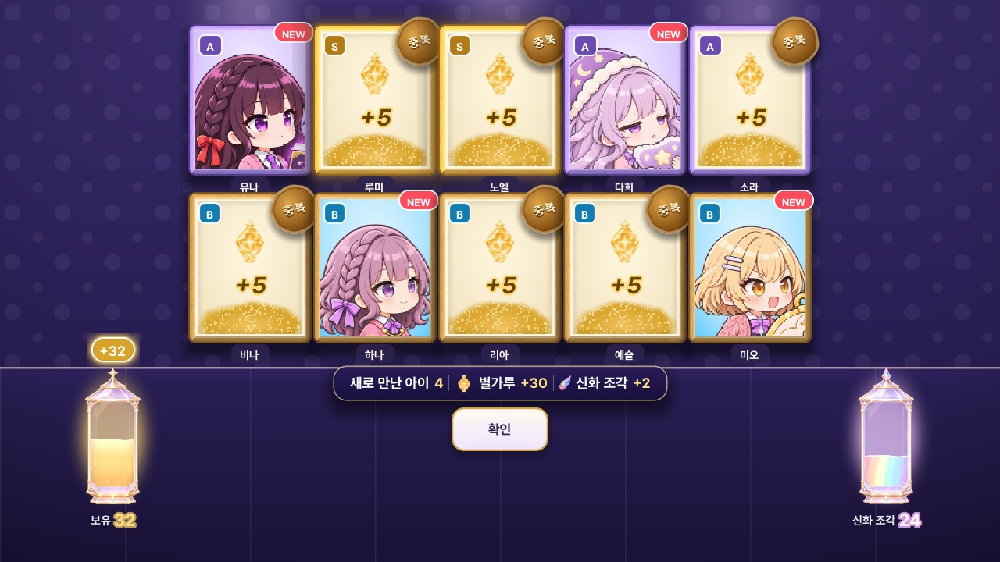
도아·세나·다희·가을(모자), 아영(틀어 올린 머리), 채영(리본). 아이콘은 「머리 기준」으로 맞춰 둬서 머리 위 장식이 각성 카드 같은 세로 카드에서 잘려요.
| 선택 | 내용 | 영향 |
|---|---|---|
| D2-A | 이 6명만 위쪽 기준을 올려 장식까지 보이게 | 장식이 다 보여요. 얼굴이 다른 캐릭터보다 조금 작아 보일 수 있어요. |
| D2-B | 그대로 두기 | 얼굴 크기는 모두 같지만 장식 윗부분이 잘려요. |
요청하신 각선미·매력 방향으로 다시 그리려 했지만, 그림 생성 도구가 거절했어요. 같은 요청을 말만 바꿔 다시 시도하지는 않을게요.
| 선택 | 내용 |
|---|---|
| D3-A | 지금 그림 유지 |
| D3-B | 노출 없이 매력을 올리는 다른 방향 (의상 디테일, 표정·눈, 포즈, 소품, 배경) — 원하시는 방향을 적어 주세요 |
세레나 원본 그림 왼쪽이 잘려 있어서 지금은 무릎 위 구도로 쓰고 있어요.
| 선택 | 내용 |
|---|---|
| D4-A | 그대로 사용 (게임 화면에서는 잘린 부분이 안 보여요) |
| D4-B | 같은 그림체로 다시 생성 (얼굴·표정이 약간 달라질 수 있어요) |
옛 연출 셰이더 14개와 그림 백업(원본 약 150MB)이 남아 있어요. 게임 빌드(약 40MB)에는 들어가지 않아요.
| 선택 | 내용 |
|---|---|
| D5-A | 안 쓰는 셰이더만 지우고 백업 그림은 보관 |
| D5-B | 지금은 전부 보관 (v6 테스트 뒤 다시 정리) |
| D5-C | 셰이더와 오래된 백업까지 정리 |
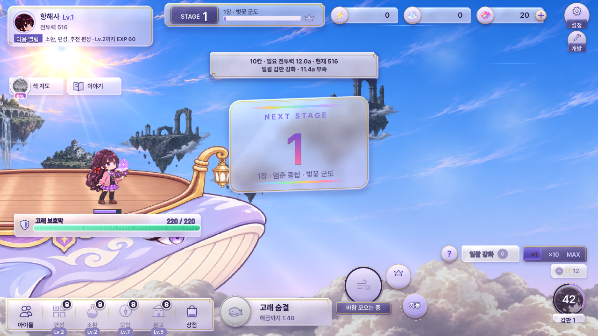
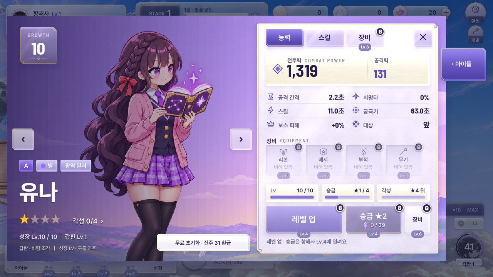
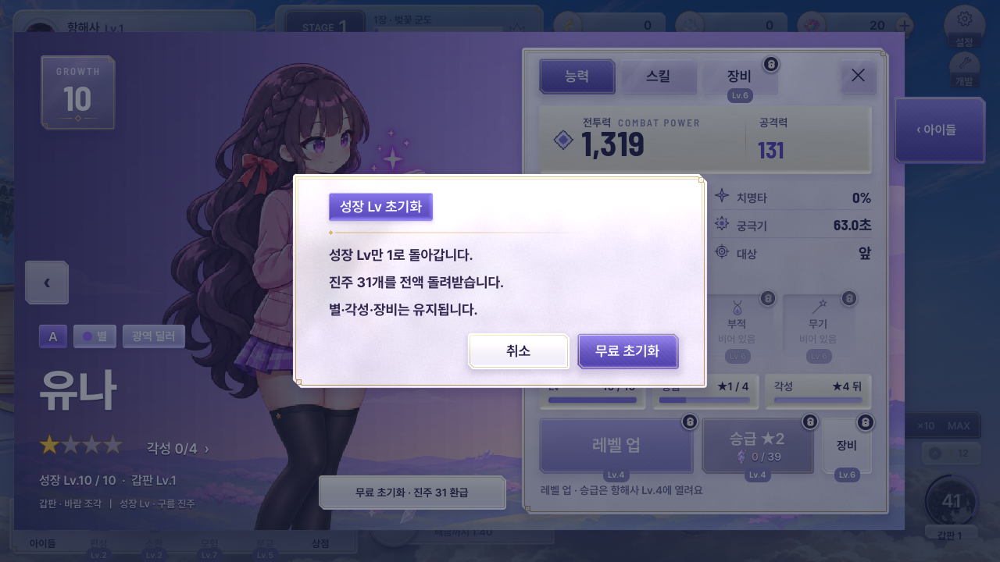
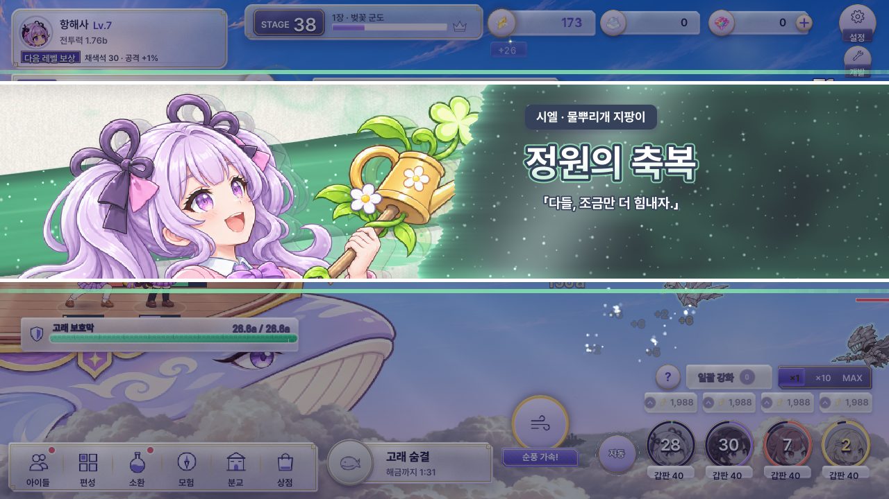
말풍선이 첫 편성 칸 아래쪽에 조금 걸쳐요. 버튼과 칸 번호는 가리지 않아서 QA는 괜찮다고 봤어요. 어색하면 말풍선을 옮길게요.
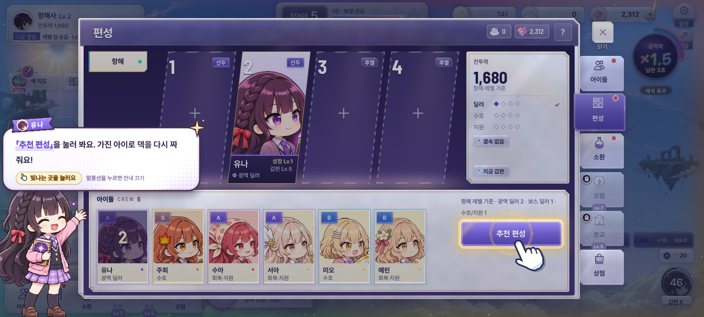
파스텔은 유지하고 뿌연 느낌만 덜어냈어요(채도·대비 살짝). 눈 반짝임은 은은하게만. 왼쪽이 전, 오른쪽이 후예요.
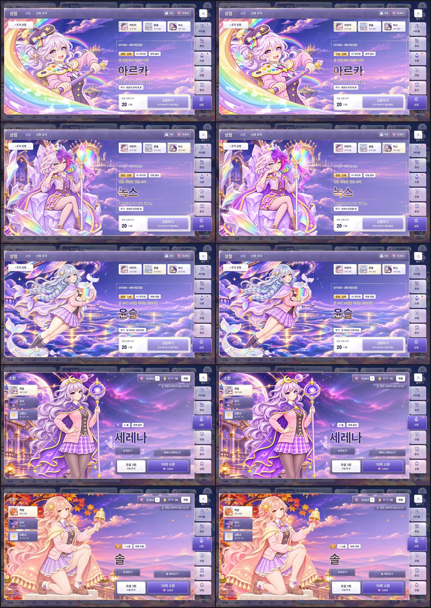
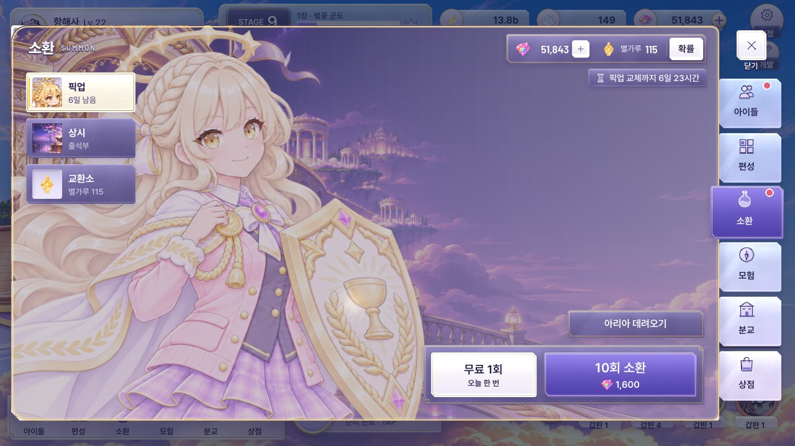
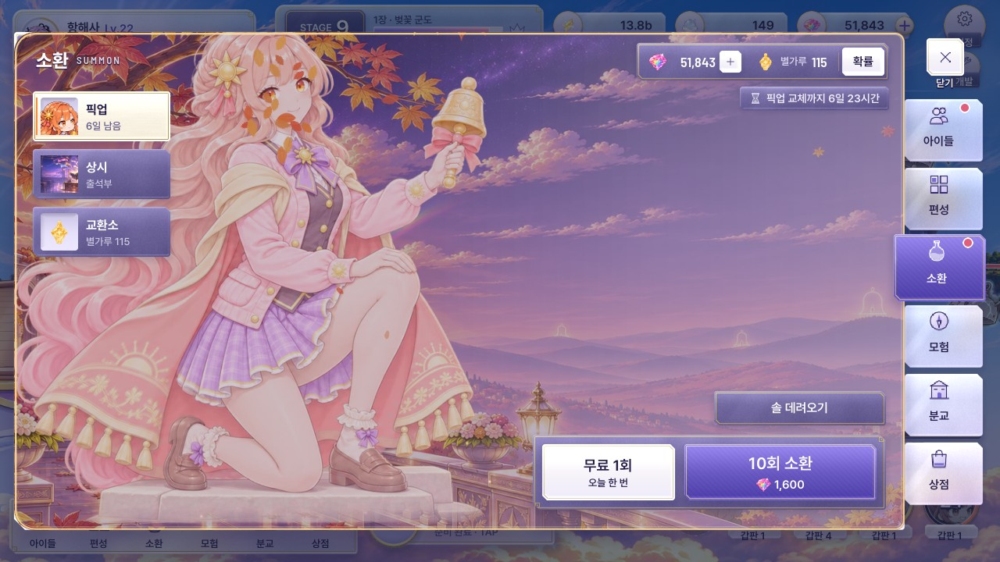
아직 작업 중인 화면이에요. 지금은 적이 오른쪽에 세로로 줄지어 서는 모습이라, 화면 가운데까지 들어오도록 더 다듬고 있어요. 완성되면 짧은 영상과 함께 다시 보여 드릴게요. 방향만 먼저 봐 주세요.
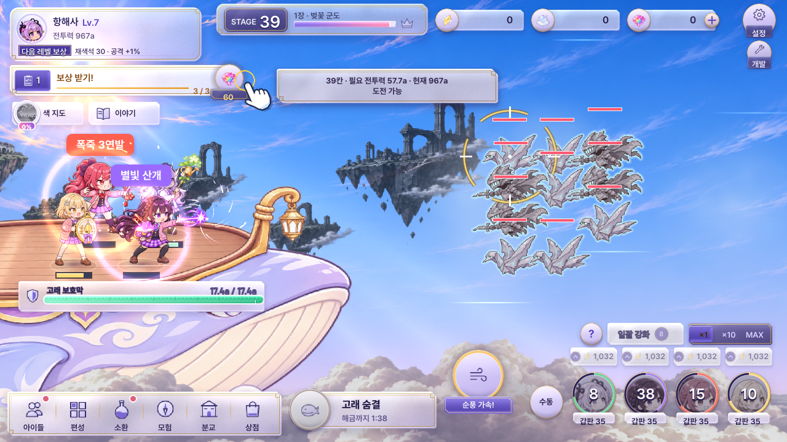
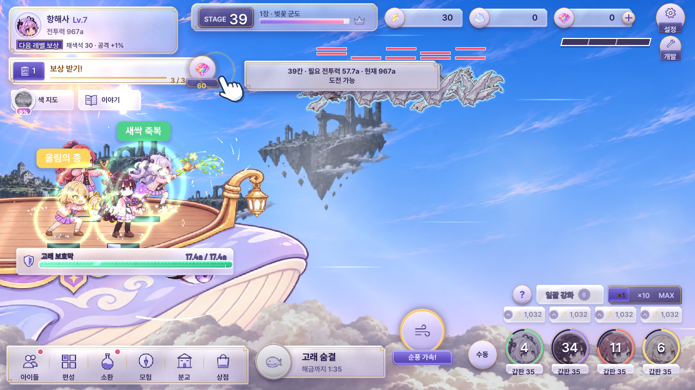
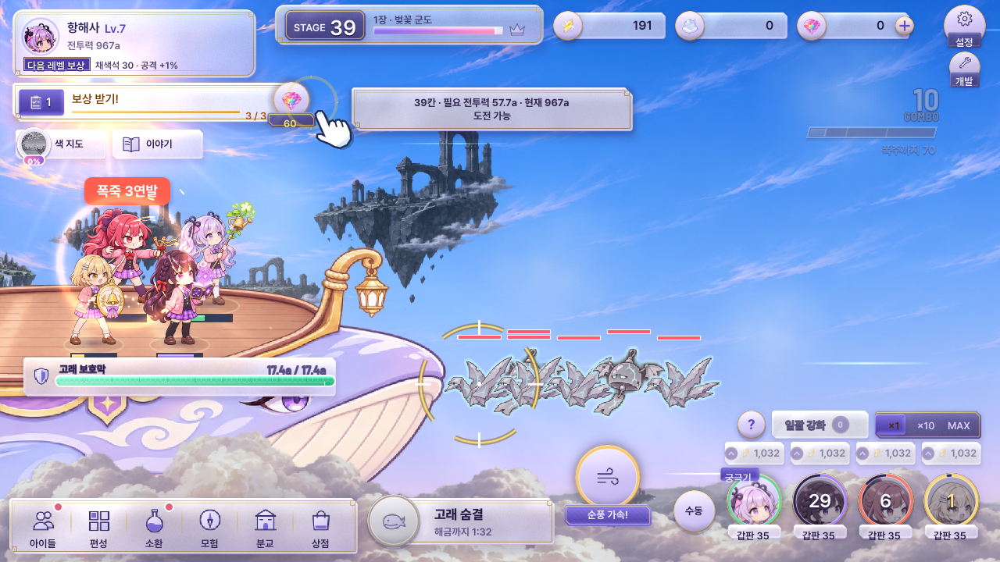
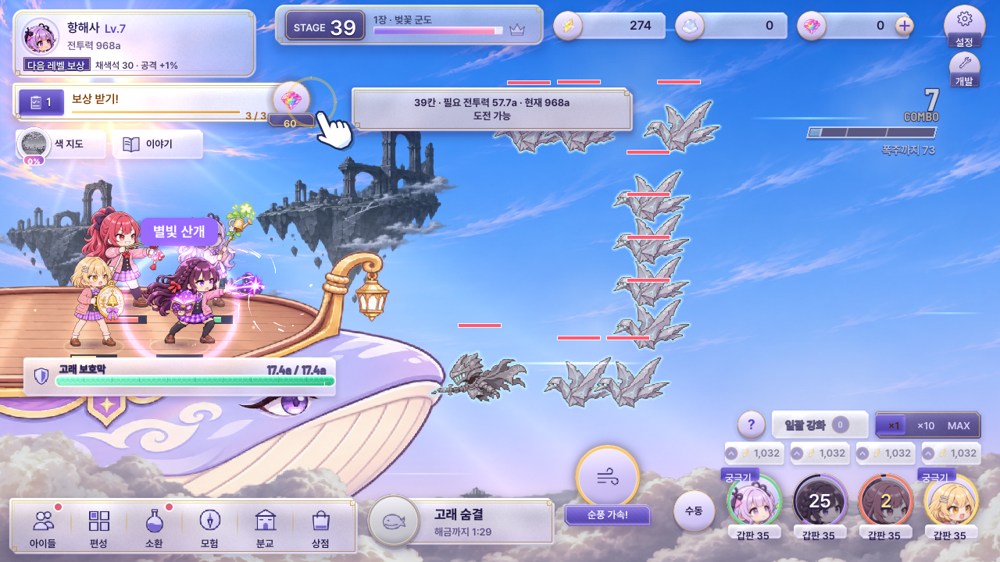
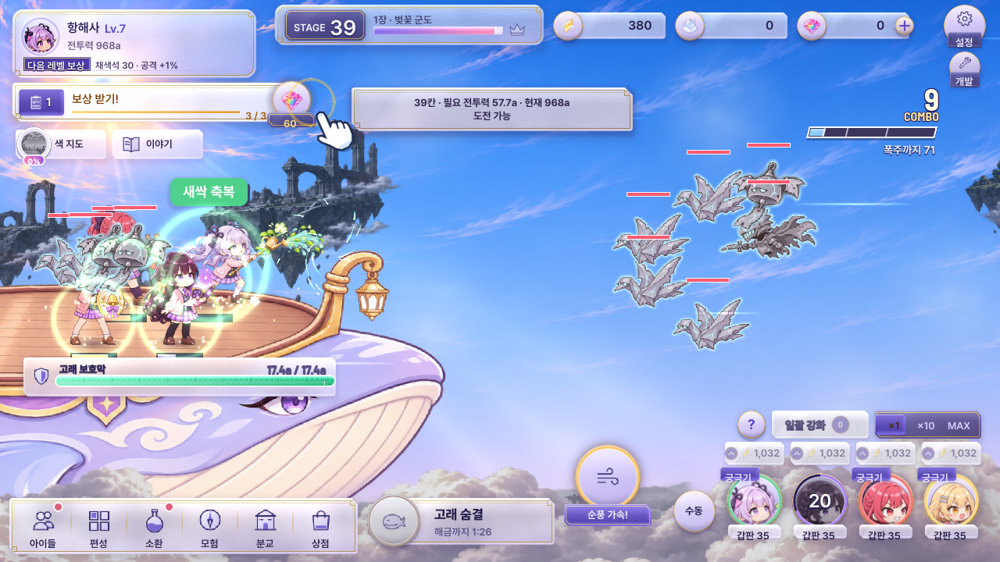
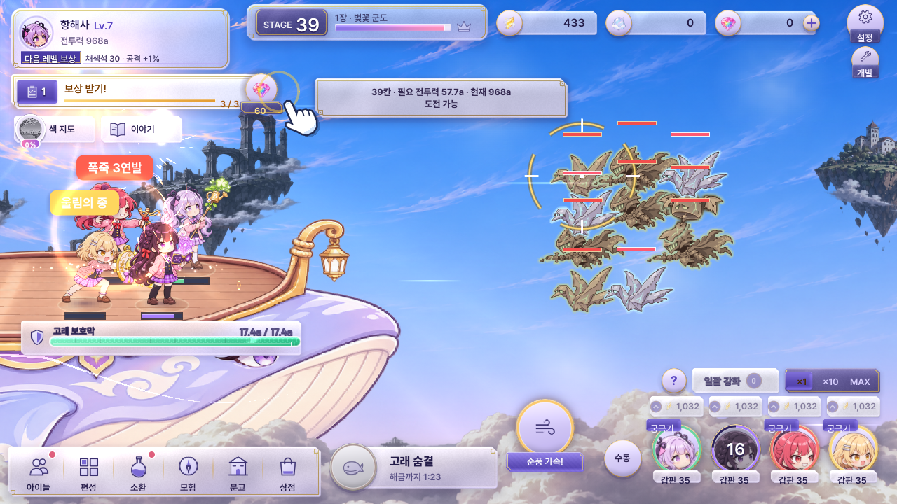
| 항목 | 목표 | 지금 |
|---|---|---|
| 보통 플레이어 첫 보스 막힘 | 3~5분 | 4분 11초 |
| 보통 플레이어 200칸 도착 | 약 1시간 56분 | 1시간 58분 (사방 등장 적용 전) |
| 강화 안 함 | 8칸에서 막힘 | 필요 전투력으로 막힘 |
사방 등장을 넣은 뒤 다시 맞춰요. 실제 플레이에서 느낌이 다르면 알려 주세요.
다시 보내 주신다고 하셨던 40개 피드백 목록을 아직 받지 못했어요. 채팅에 붙여 주시거나 파일 위치를 알려 주세요.
G:\내 드라이브\SkyWhale\)를 드려요.